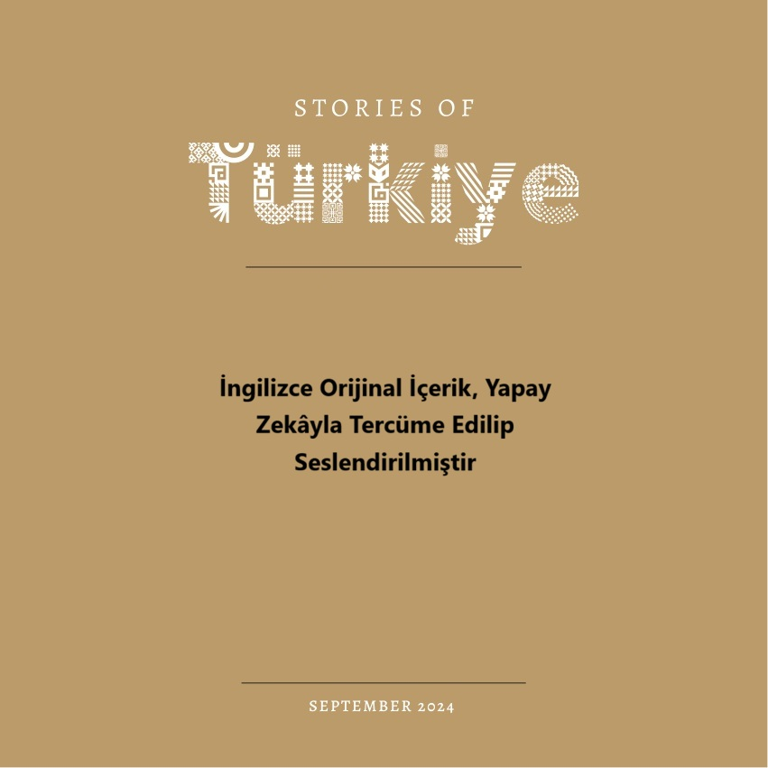
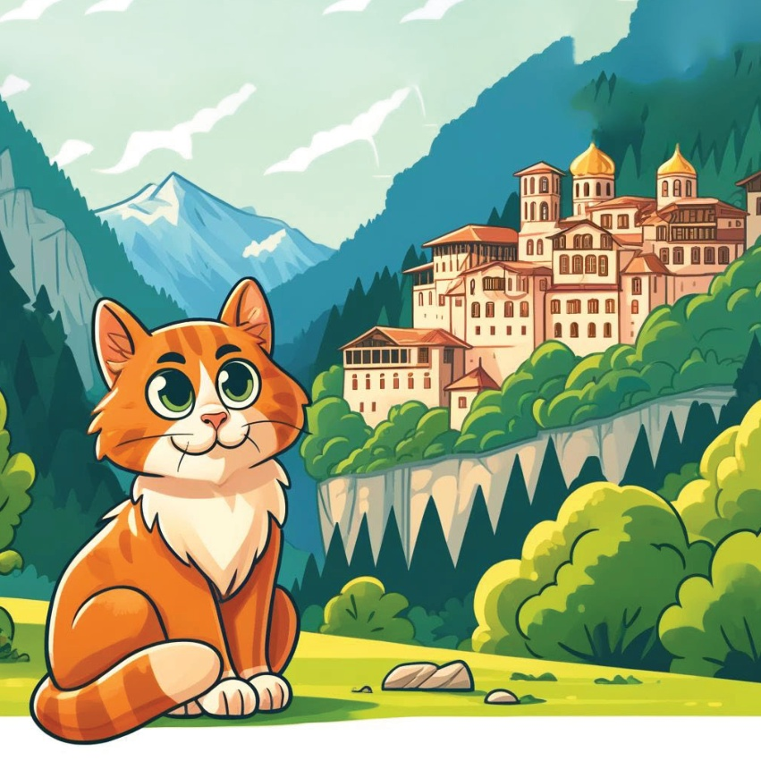

1

2

3
Такім былое ці Karamel,
маленькая прыгожая котка,
зараспела пра сема снагодзеній Тыркіі.
Зацікавілася, яна вырашыла адправіцца ў
поўроду, каб даследаваць гэтыя цудоўныя месцы.
З картай у лапцы
і ахвотай ў сэрцы,
она адправілася ў сваё новае прыгода.
4
5
Каппадокія
Першым прыпыркам Карамелі была Каппадокія,
мастатая сваімі ўнікальнымі дзіваватымі камінамі
і палётамі на адпаркоўках.
Яна здзіўлялася сюррэалістычнаму ландшафту
і задаволілася чароўным палётам на аэрастаце,
наслаждаючыся вялізным выглядам.
6
7
Памуккале
Далей Карамель наведала Памуккале,
знамнае сваімі цудоўнымі белымі тэрасамі
і цяплімі мінеральныя водамі.
Яна акупіла лапы ў цёплых,
церапных водах і даследавала
дзейныя руіны Гераполісу.
8
9
Гнатам Немрут
Карамель паспела да пагоры Немрут,
дзе яна ўбачыла гіганцкае камяняное галавы старажытных багоў.
Яна сочыла за ўсходం з вяршыні гары, адчуваючы містычную аўру гэтага месца.
10
11
Эфес
У Эфісе Карамель даследаваў
вялікі antigos горад, здзіўляясь
Бібліяцецы Цельса, вялікаму тэатру
і іншым цудоўным бу dinâmicaм,
які распавядалі гісторыі пра мінулы век.
12
13
Асаноўная прыпырка Карамелі была Святая Софія ў Істанбуле,
велічны будынак, які служаў як царква, так і мечатам.
Яна ахнула ад цудоўнай архітэктуры
і багатай гісторыі, якая адбівалася ў яго сценах.
14
15
Бялоснежная ме nhất калі Карамель наведала Бялоснежную ме nhất у Стамбуле, вядомую сваімі прыгожымі блакітнымі пліткамі і ўражальнай архітэктурай. Яна прайшла па цешычных дворах і падзялілася прыгожымі куполамі і мінарэтамі.
16
17
Маठा Сумела
Финальная прыпырка Карамель была маठा Сумела, размешчаная на высокай грыве над Чорным морам. Яна здзіўлялася цудоўным ракавелю маठा і яе цудоўным фрэскам, адчуваючы цішыню старажытнага месца.
18

19
З захапленням у сэрцы і думках, напоўненых цудамі Турыі, Карамель вярнулася дадому. Яна астралілася, што сапраўдныя скарбы Турыі — гэта яе неверагодная гісторыя і вялізныя пейзажы, якія зробілі яе прыгода незабыўнай.
20
21
22